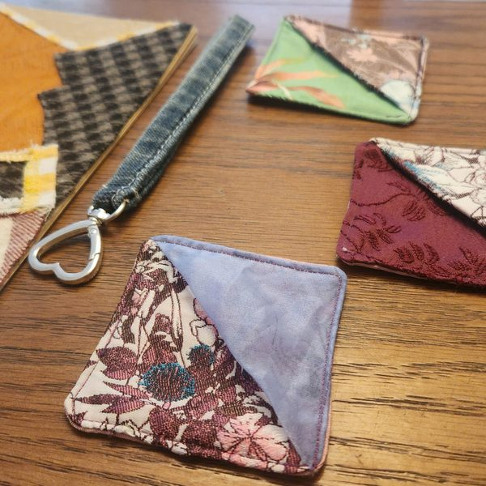
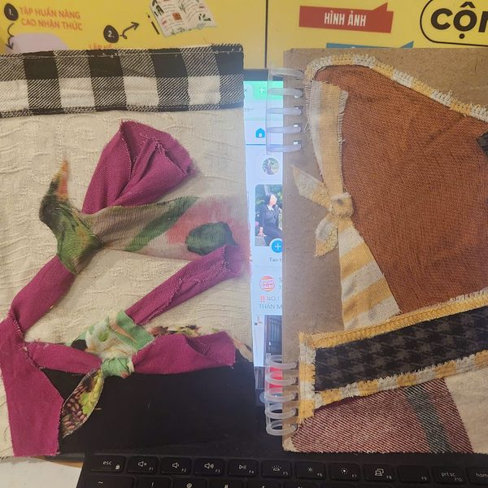
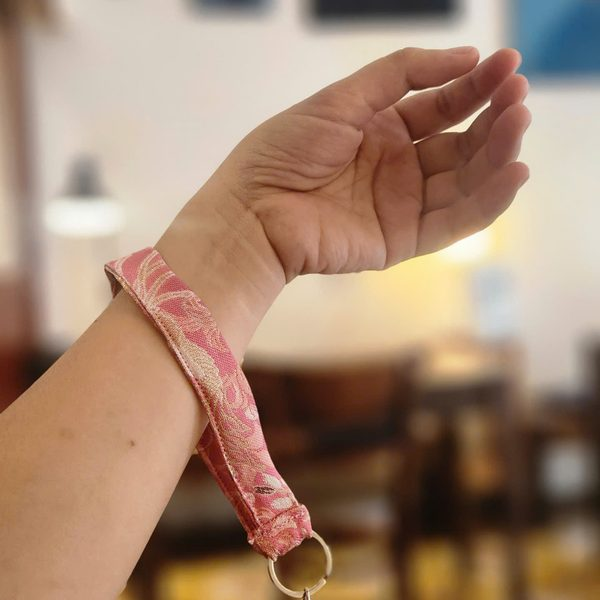
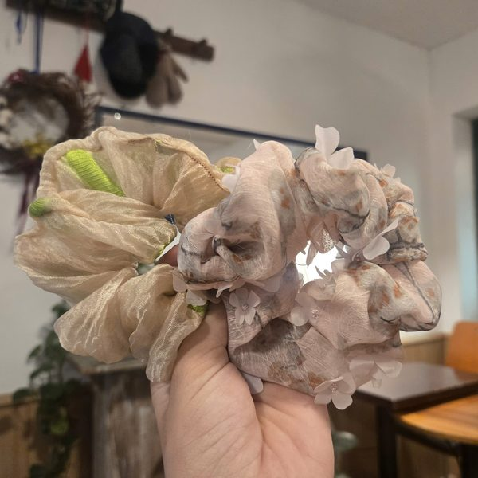
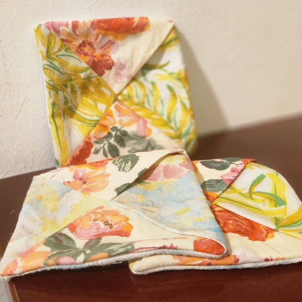
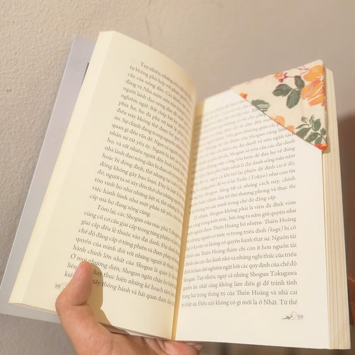
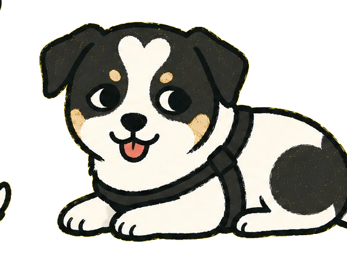

Phụ kiện vải vụn
— handmade · upcycledTúi, ví, móc khóa, dây buộc tóc, bookmark, gối, thảm... được làm từ vải vụn thu gom từ các nhà may địa phương và quần áo secondhand. Mỗi sản phẩm là một câu chuyện vải riêng.

Túi đeo chéo
Vải caro upcycled

Ví & thẻ vải ghép
Patchwork độc bản

Bìa sổ vải ghép
Handmade journal

Dây đeo cổ tay
Phụ kiện · móc khóa

Dây buộc tóc
Scrunchie vải mềm

Lót ly vải
Hoa cỏ · bốn mùa

Bookmark vải
Cho người yêu sách

Thảm vải ghép
Patchwork tròn lớn

Gối vải ghép
Họa tiết vintage · set 3
+ Còn nhiều mẫu khác đang chờ bạn tại cửa hàng.
Văn phòng phẩm bền vững
— giấy tái chế · handmadeSổ, bookmark, giấy kraft, bút bi... sử dụng giấy tái chế và công nghệ in thân thiện môi trường. Các mẫu sổ Gem độc đáo: Sổ lên ý tưởng, Sổ quản lý công việc & quản lý stress.

Sổ kraft spiral
Bìa kraft · A6/A5
+ Sổ lên ý tưởng Gem, sổ quản lý stress, giấy kraft theo bảng giá, bookmark nam châm — xem trực tiếp tại cửa hàng.
Quần áo 2hand
— chọn lọc · tân trang
Đang cập nhật ảnh.
Quần áo 2hand tại Gem được chọn lọc kỹ lưỡng, có thể tân trang hoặc tái chế thành đồ mới. Mỗi món có câu chuyện riêng. Mời bạn ghé cửa hàng để xem & thử trực tiếp.
Gốm sứ Nhật
— sắc màu của thời gian
Đang cập nhật ảnh.
Gốm sứ Nhật được chọn lọc, làm sạch, mang sắc màu của thời gian. Mỗi món gốm là một mảnh ký ức.